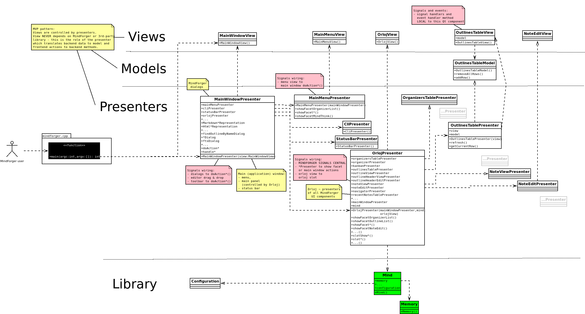

MindForger
Docs
MindForger
Docs
Developer documentation
"There are only two kinds of languages: the ones people complain about and the ones nobody uses" -- Bjarne Stroustrup
MindForger is written in C++ programming language.
Contribute:
Specifications:
In case that you have any question or want to learn more about technical details please don't hesitate to contact me.
Contribute
Current MindForger implementation is just an initial imperfect sketch of much broader vision. It's purpose is to demonstrate viability of thinking notebook idea and to show possible research directions.
Feel free to contribute! Don't hesitate to contact me.
- Bugs and suggestions
- Submit bugs, issues, ideas and enhancements.
- Translations
- Translate MindForger to your favorite language.
- Platform support
- Port MindForger to your favorite OS or distribution.
- Code
- Submit pull request or patch with implementation of a feature you missed.
- Research
- Consider making your AI/ML, NLP, data mining, ... research on top of (your) documents indexed to MindForger ontology.
- Integration
- How-to or code enabling integration with your (favorite) project.
- Enhancements
- Submit performance, efficiency and/or productivity enhancements.
- Documentation
- Write a document, blog post or tweet, create YouTube video, ...
Linux development environment
Perhaps you may find useful description of my development environment:
- Backend library:
- Source: GitHub
- Compiler: GCC
- Compilation speed-up:
ccache(set inQtCreatorasccache g++) - Make:
qmake+make - IDE: QtCreator (my own build w/ Emacs-style keyboard shortcuts - find it on GitHub)
- Debugger:
gdb - Leaks:
valgrind - Profiler: GCC + gprof
- Unit tests: Google Test Framework
- Qt GUI frontend:
- Compiler: GCC
- Make:
qmake+make - IDE: QtCreator
Tools/Options/Fonts: vim dark, 12pt, zoom: 100%Whitespaces: no tabs, visible, no traling whitespaces- "Borland Turbo C style help" for Qt via F1
- Debugger:
- QtCreator debugger
gdb
- Unit tests: Sikulix
- Editor:
Emacs(quick edits w/ key bindings that enable my productivity)- set tabs for 4
- no tabs just whitespaces
alt-x compile>cd ../.. && make(make -k for keep going)
For more details see the source code.
Build
See build on Ubuntu for how to build MindForger:
make build-dev
Unit tests are conducted by the gtest framework. Download, build and optionally install this framework before building MindForger unit tests.
Tests
Prerequisite: Google test framework
- Checkout
googletestand go to the checkout:
cd googletest
- Create/enter a build directory (skip mkdir if build/ already exists, as it does here):
mkdir -p build
cd build
- Configure with CMake (Release build, install prefix /usr/local):
cmake -DCMAKE_BUILD_TYPE=Release ..
- Build:
make -j$(nproc)
- Install system-wide (needs root — this copies headers to /usr/local/include/gtest and /usr/local/include/gmock, and libs to /usr/local/lib):
sudo make install
- Refresh the linker cache (usually not strictly required for static libs, but harmless):
sudo ldconfig
- Verify the install:
ls /usr/local/include/gtest/gtest.h
ls /usr/local/lib/libgtest.a /usr/local/lib/libgtest_main.a
- Set the env vars test-lib-units.sh requires, then run the tests:
export M8R_CPU_CORES=$(nproc)
export M8R_GIT_PATH=/home/dvorka/p/mindforger/git/mindforger
cd /home/dvorka/p/mindforger/git/mindforger/build
make test-lib
MindForger tests:
- library unit tests
- frontend GUI tests
Library unit tests:
- based on Google test framework
- located in
lib/test/src - can be run using
build/test-lib-units.sh- see source code for running all/particular test w/ or w/o valgrind/gdb/...
Frontend library tests:
- based on Sikulix
- located in
app/test/sikulix - can be run using
build/test-gui.sh
For more details check tests source code.
Benchmarks
MindForger has also library benchmarks:
- based on Google test framework
- located in
lib/test/benchmark - can be run using
build/test-lib-units.sh- see script source code to run particular benchark.
Benchmarks are disabled by default - go to benchmark source code and remove DISABLED_ prefix
from its name. For more details see Google test framework documentation and benchmarks source code.
Packaging
Scripts used to created packages for Linux distributions can be found in:
- Ubuntu:
build/ubuntu- tarball > local binary/source deb build (pbuilder) > Launchpad upload > Launchpad PPA
- Debian:
build/debian- tarball > local binary/source deb build > local Aptly PPA > PPA snapshot upload to http://www.mindforger.com/debian
- Fedora:
build/fedora- deb >
alienconversion w/ postprocessing to RPM > upload as release asset
- deb >
Upstream tarball is created in the same way as archive released via GitHub:
- GitHub release:
build/github
Check make targets for MindForger supported platforms targets:
make help
Windows development environment
Perhaps you may find useful description of my development environment:
- Source:
- Compiler:
- Microsoft Visual C++ compiler
- Make:
qmake+cmake+make
- Installer:
- JRSoftware Inno Setup
- IDE:
- Qt Creator
- Unit tests:
- Google Test Framework
For more details see source code.
Install prerequisites
- Microsoft Visual Studio (Community Edition suffices), during installation add with C++ support (todo: detailed info or screenshot)
- or [Windows 10 SDK] (untested)(https://developer.microsoft.com/en-us/windows/downloads/windows-10-sdk)
- Qt
- Download Qt for Windows - Open Source
- During installation select:
- Qt->Qt 5.12.x->MSVC 2017 64-bit
- Qt-> Qt WebEngine
- cmake
Prepare MindForger sources:
- Checkout Mindforger
git clone https://github.com/dvorka/mindforger.gitcd mindforgergit checkout dev/1.49.0-win
- Init dependencies
git submodule initgit supmodule update
Build dependencies
Building dependecies is required only once, during initial building.
Build cmake-gfm - it requires cmake on the path.
- Goto
cmark-gfmdirectory:cd deps\cmark-gfm
- Use build directory:
mkdir buildcd build
- Generate build files:
cmake -G "Visual Studio 15 2017 Win64" -DCMAKE_CONFIGURATION_TYPES=Debug;Release -DCMARK_TESTS=OFF -DCMARK_SHARED=OFF ..
- Build both release and debug profiles
cmake --build . --config Release -- /mcmake --build . --config Debug -- /m
Build MindForger
- Goto GitHub repository directory:
cd $GIT\mindforger
- Setup development environment in cmd line. Change path according to your MSVC 2017 and Qt installation
"C:\software\Qt\5.12.0\msvc2017_64\bin\qtenv2.bat""C:\Program Files (x86)\Microsoft Visual Studio\2017\Community\VC\Auxiliary\Build\vcvars64.bat"
- Generate make files:
qmake -r mindforger.pro
- Build MindForger:
nmake
.exebinary will be stored in theapp\releasefolder
Plan for Windows build and distribution
GitHub:
- milestone: https://github.com/dvorka/mindforger/milestone/10
- branch: https://github.com/dvorka/mindforger/tree/dev/1.49.0-win
2019/1 plan to port MindForger on Windows:
- [x] development environment:
- document IDE, compiler and OS setup - QtCreator, LLVM (would be nice), Win10 (VM)
- [x] backend lib build:
- rewrite using Qt to portable version (Qt is NOT intentionally used in backend now)
- decide whether...
- go with Qt functions on all platforms
- conditional compilation which introduces Qt dependency for Win only
- https://github.com/dvorka/mindforger/issues/77
- [x] (preview) frontend build to identify non-portable code:
- skip MD 2 HTML rendering (avoid its compilation) w/
html_outline_representation.cppandMF_NO_MD_2_HTMLdefine - skip HTML rendering (avoid its compilation)
- https://github.com/dvorka/mindforger/issues/648
- skip MD 2 HTML rendering (avoid its compilation) w/
- [x] MD 2 HTML rendering:
- refactor existing impl to iface & implementation allowing to switch renderer
- migrate to
cmark-GFMlibrary ~ GitHub's MD 2 HTML renderer
- [x] HTML viewer:
- Qt uses the same engine as on macOS (WebEngine vs. WebKit)
- [x] full build w/ lib,
cmark-GFMand HTML viewer - [x] Win installer (possibly Qt based)
- [ ] make MF real Win app:
- keyboard shortcuts which follow Windows conventions
- desktop integration which start associated app for opened attachments (PDF, GIF, ...)
Get pre-release user feedback:
- https://github.com/dvorka/mindforger/issues/632
Running MindForger
- Manual run outside of QtCreator requires adding Qt libraries and Zlib libraries to PATH. Zlib binaries are located in `$GIT\mindforger\deps\zlib-win\
- Qt files. Change path according to your setup
"C:\software\Qt\5.12.0\msvc2017_64\bin\qtenv2.bat"
- Zlib
set "PATH=%PATH%;$GIT\mindforger\deps\zlib-win"
- Start MindForger
app\release\mindforger.exe
Creating installer
- Install Inno Setup 5
- Prepare development environment. Change path according to your Qt installation
"C:\software\Qt\5.12.0\msvc2017_64\bin\qtenv2.bat"- Gather dependencies
cd $GIT\mindforgerwindeployqt app\release\mindforger.exe --dir app\release\bin --no-compiler-runtime- Build installer. Change path to the vcredist_x64.exe according to your setup.
"c:\Program Files (x86)\Inno Setup 5\ISCC.exe" /Qp /DVcRedistPath="c:\Program Files (x86)\Microsoft Visual Studio\2017\Community\VC\Redist\MSVC\14.14.26405\vcredist_x64.exe" build\windows\installer\mindforger-setup.iss- the result is in the
app\release\installerfolder
Building unit tests
Unit tests are conducted by the gtest framework. Download, build and optionally install this framework before building MindForger unit tests.
Gtest is expected at C:\Program Files\gtest-distribution by default. If you have it somewhere else you have to update the lib\test\src\src.pro Qt project file to change path to gtest.
Than:
- Prepare development environment. Change path according to your Qt and MSVC 2017 installation
"C:\software\Qt\5.12.0\msvc2017_64\bin\qtenv2.bat""C:\Program Files (x86)\Microsoft Visual Studio\2017\Community\VC\Auxiliary\Build\vcvars64.bat"
- Go to project file
cd $GIT\mindforger\lib\test
- Generate make files
qmake -r mindforger-lib-unit-tests.pro "CONFIG+=debug" "CONFIG+=mfdebug"
- Build tests
nmake
Running unit tests
- Prepare environment
set "PATH=%PATH%;$GIT\mindforger\deps\zlib-win"set M8R_GIT_PATH=$GIT\mindforger- Run tests
cd $GIT\mindforgerlib\test\src\debug\mindforger-lib-unit-tests.exe
Using scripts
cd build/
make help
Alternatively, instead using of following above described manual steps, you can take advantage of batch files prepared for building and running MindForger, installer and unit tests. All the scripts are located in the $GIT\mindforger\build folder:
build-app.batbuild-cmake.batbuild-installer.batbuild-unit-tests.batenv.batrun-app.batrun-unit-tests.bat
Most important is the env.bat. It's called by others and sets up command line environment. Ammend this file to change paths based on your setup. Other scripts are self-explanatory. The run-unit-tests.bat can also take any argument. This is usefull for passing options to the gtest framework.
Windows Continous Integration (CI)
Continous Integration for Windows:
- AppVeyor
- See also
appveyor.yml
- See also
Optional QtCreator build
- Start Qt creator
- Open project
%GIT%\mindforger\mindforger.pro- Enable Desktop Qt 5.xx MSVC2017 64bit build
- Set the Build Directory to
%GIT%\mindforger
-
Build MSVC 2017 64-bit
-
For setting debugger in QtCreator follow instructions in Qt documention Setting Up Debugger
- CDB is part for Windows SDK. If you have only Visual Studio, it must be installed additionaly. Download Windows 10 SDK and select
Debugging Tools for Windowsonly.
- CDB is part for Windows SDK. If you have only Visual Studio, it must be installed additionaly. Download Windows 10 SDK and select
QtCreator debugging
- For setting debugger in QtCreator follow instructions in Qt documention Setting Up Debugger
- CDB is part for Windows SDK. If you have only Visual Studio, it must be installed additionaly.
Download Windows 10 SDK
and select
Debugging Tools for Windowsonly.
Conventions and BPs
Conventions and best practices.
Git and Branching Conventions
Git:
masteris the main development branch- source code in
masterbranch must be always stable masterbranch contains the latest MindForger release source code- new MindForger version
<major>.<minor>.<patch>is developed in Git branchdev/<major>.<minor>/<patch>
Git branch naming convention:
feature-<related issue id>/<feature-name>- feature branch
enhancement-<related issue id>/<enhancement-name>- enhancement branch
bug-<related issue id>/<description>- bug fix branch
benchmark-<related issue id>/<description>- benchmark branch
-
platform-<release version>/<platform-name>- platform support branch
-
dev/<release version>- release development branch used before release (stable master)
stabilization/<release version>- stable brach used after release (patch releases)
Source documentation conventions
Source code documentation conventions:
- Use Doxygen syntax in source code comments https://www.cs.cmu.edu/~410/doc/doxygen.html
Technical Architecture
MindForger technical architecture.
Library
3rd-party dependencies
cmark-gfm
MindForger uses cmark-gfm for rendering of Markdown documents to HTML:
- cmark-gfm repository: https://github.com/github/cmark-gfm
- cmark-gfm repository clone: https://github.com/dvorka/cmark
Fixes to cmark-gfm:
- https://github.com/dvorka/cmark/commit/bc97db117ec777c112055bc55918b63a89efbb65
- fix of MSVC 2017 build (Windows)
- https://github.com/dvorka/cmark/commit/f06d944d8e19816cce322ce87140f8c8cf2db89e
- Removal of code blocks prefixing with language specification using "language-" to fix Mermaid integration and allow class specification w/o prefix which is not desired.
cmark-gfm versions used:
- 1.53.0 - onwards
- 766f161ef6d61019acf3a69f5099489e7d14cd49
0.29.0.gfm.2(September 16, 2021)
- 766f161ef6d61019acf3a69f5099489e7d14cd49
- ... - 1.52.0
- https://github.com/dvorka/cmark/commit/3785191c3afb6cabd56776f6d6c73c90f3131d5d
0.28.3.gfm.20(January 31, 2019) with aforementioned patches
- https://github.com/dvorka/cmark/commit/3785191c3afb6cabd56776f6d6c73c90f3131d5d
- 1.42.0 - ...
- MindForger used Discount for Markdown rendering priort cmark-gfm
Markdown Recursive Descent Parser
NLP: Stemmer, Lexicon, BoW
GUI
Qt
Model View Presenter

Async UI updates
Localization
Adding a new/updating existing MindForger l10n:
- Add translation name to
app/app.pro:TRANSLATIONS += resources/qt/translations/mindforger_en.ts - Run
lupdate mindforger.pro- it will parse source code and prepare empty file for translations (later update). This is where is new translation written.- If
lupdateis not present on Ubuntu, then installsudo apt-get install qttools5-dev-tools
- If
- Edit translations using
linguisttool e.g.linguist mindforger_cs.ts - Run
lrelease app/app.proto release translations that might be used in build. - Add translation
.qmresource toapp/mf-resources.qrs - Build application.
- Test it:
export LANGUAGE=cs_CZ && export LANG=cs_CZ.UTF-8 && ./mindforgerexport LANGUAGE=pt_BR && export LANG=pt_BR.UTF-8 && ./mindforger
See also:
- http://doc.qt.io/qt-5/internationalization.html
- http://doc.qt.io/qt-5/qtlinguist-hellotr-example.html
Force-driven graph
Benchmarks
Formats specification
MindForger can open any file that uses Markdown format. MindForger can also open any directory that contains Markdown files (also in its sub-directories).
However, you can use MindForger's Markdown hosted DSL and repository format to get much more (mind related) features.
Markdown hosted DSL
This section describes MD conventions that MindForger uses to store outlines.
Description:
- metadata added by MindForger are optional
- if user deletes metadata, then they are not added
- user may activate creation of metadata by adding (any case) just after section title
Metadatakeyword is case insensitive i.e. any other variant is valid substituation e.g.metadata,MetaDataorMETADATA- tags chosen to follow typical naming e.g. GMail (labels, keywords, ... forbidden)
Example:
# Canonical Message Similarity Code
This document contains ideas related to the definition of similarity codes for
canonical messages.
## Requirements
... here comes a text.
Repository layout
Design goals:
- Repository specification SHOULD be general i.e. not bound to MindForger so that anybody can create it, use it and it won't be vendor specific.
- Repository format MUST be human friendly i.e. easy to create and read for a normal person.
Repository layout:
[ROOT]/
memory/
[DIRECTORY-NAME]/
[OUTLINE-NAME].md ... Markdown is default MF format. Source code/markup free text can be inlined
using three back apostrophes. Intentionally there is no txt, TWiki, HTML
as outline format to keep focus (txt/.../HTML can be an attachment of empty
MD file).
[OUTLINE-NAME].[ATTACH-NAME].png ... '.' is reserved character
[OUTLINE-NAME].[ATTACH-NAME].jpg
[OUTLINE-NAME].[ATTACH-NAME].gif
...
limbo/
stencils/
...
mind/ ... Git ignored directory w/ indexed knowledge base
index.mf ... MF's index can be fully rebuilt from
repository content (file internals and
Git index information), it is used by
MF runtime (navigation, ...)
fts/ ... Lucene stores its files to here
...
.gitignore
README.md ... MF generated info for nice Git repo
that can be customized by user
Example repository:
ROOT/
outlines/
My Example/
frontend-design.twiki
frontend-design.mockup.jpg
repository-design.md
repository-design.overview.png
repository-design.structure.png
ideas.txt
mind/
.gitignore
index
README.md
Description:
- repository is Git repository
- .gitignore prevents storing of big attachments and indices to Git
- DIRECTORY-NAME ... A-Z a-z 0-9 SPACE - _
- OUTLINE-NAME ... A-Z a-z 0-9 SPACE - _
- directory is outline label - name directories to be nice labels:
- do NOT use plurals: 'templates' is not good label > use 'template' instead
- user lower case for normal adjectives (template, import) and upper case for names like MindForger or Systinet
- MindForger home screen == cloud of is outline and/or note labels (split screen).
- Extensions:
- files w/ extensions that are not explicitly enumerated are ignored by Git (global ignore)
Continuous Integration (CI)
Multiple CI services are used to build, test and package MindForger.
GitHub Actions
GitHub Actions are used to build macOS DiskImaGe packages and tarballs:
See also .github/workflows.
AppVeyor
AppVeyor CI is used to build Windows installer:
See also appveyor.yml.
Travis CI (condemned)
Travis CI is no longer used due to (GitHub account related) privacy issues and coarse grained security:
See also .travis.yml.
Release automation
This is analysis of release automation making MindForger release much faster and less time consuming.
Release artifacts:
- PPA Launchpad
- State: fully scripted
- Todo:
- Load version number from a central place (env script)
- Call this script from central release script.
- Add section to generated report of main release script w/ URLs of Launchpad distros.
- PPA Debian (private)
- State: text how to.
- Todo:
- Load version number.
- Write script which automates OLD version removal and new version add.
- Write script which will upload and replace PPA over FTS/SFTP/scp
- Add section to generated report of main release
- .deb
- ...
- .rpm
- ...
- tarball
- ...